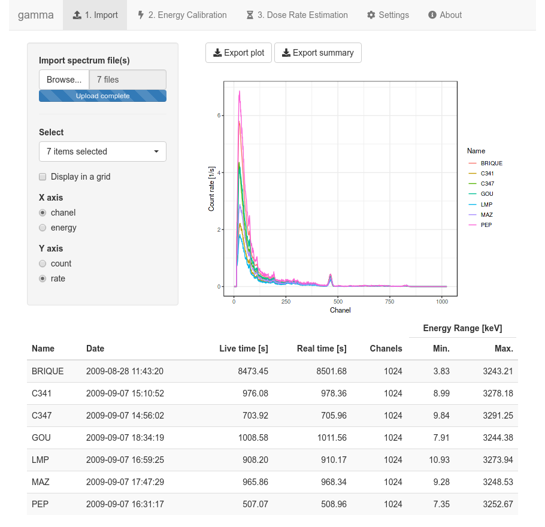
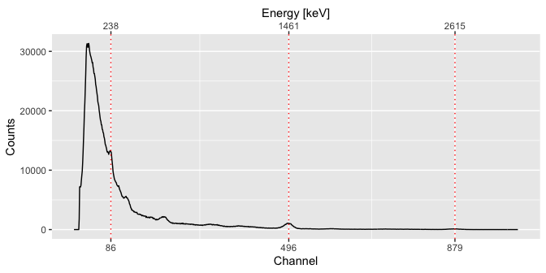
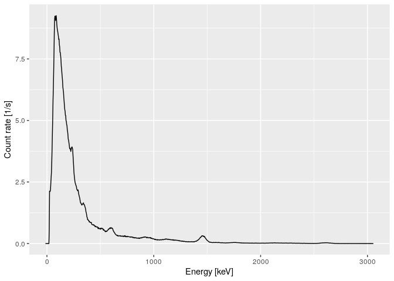

Overview
gamma is intended to process in-situ gamma-ray spectrometry measurements for luminescence dating. This package allows to import, inspect and (automatically) correct the energy scale of the spectrum. It provides methods for estimating the gamma dose rate by the use of a calibration curve. This package only supports Canberra CNF and TKA files.
Usage
A Shiny application provides an exhanced graphical user interface:

Or, if you need a more reproducible workflow:
## A minimal example
## You may want to give extra attention to the energy calibration step
library(gamma)
library(magrittr)
## Find the full path to the spectrum file
spc_file <- system.file("extdata/test_CNF.cnf", package = "gamma")
## Import the spectrum
spectrum <- read(spc_file)
## Set the expected chanel/energy peaks for the energy scale calibration
## Spectrum pre-processing and peak detection
peaks <- spectrum %>%
slice_signal() %>%
stabilize_signal(transformation = sqrt) %>%
smooth_signal(method = "savitzky", m = 21) %>%
remove_baseline() %>%
find_peaks()
## Set the energy values (in keV)
set_energy(peaks) <- c(238, NA, NA, NA, 1461, NA, NA, 2615)
peaks
#> 8 peaks were detected:
#> chanel energy
#> 1 86 238
#> 2 208 NA
#> 3 314 NA
#> 4 384 NA
#> 5 496 1461
#> 6 596 NA
#> 7 722 NA
#> 8 879 2615
## Inspect peaks
plot(spectrum, peaks)
## Calibrate the energy scale
calib <- calibrate_energy(spectrum, peaks)
## Inspect results
plot(calib, xaxis = "energy", yaxis = "rate")
## Load the calibration curve for the dose rate estimation
## As this curve is instrument specific, you will have to build your own
## See help(fit_dose)
data(BDX100, package = "gamma")
## Estimate the gamma dose rate
(doses <- predict_dose(BDX100, calib, simplify = TRUE))
#> name live_time signal_value signal_error dose_value
#> test_CNF test_CNF 3385.54 126234.7 9.605737 3981.133
#> dose_error
#> test_CNF 75.23958Contributing
Please note that the gamma project is released with a Contributor Code of Conduct. By contributing to this project, you agree to abide by its terms.
Acknowledgements
This work received a state financial support managed by the Agence Nationale de la Recherche (France) throught the program Investissements d’avenir (ref. 10-LABX-0052 and 11-IDEX-0001).